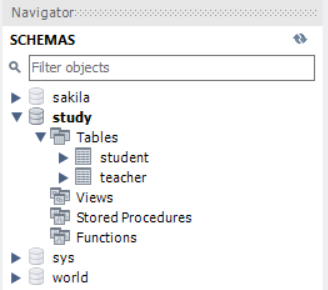
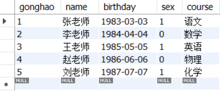
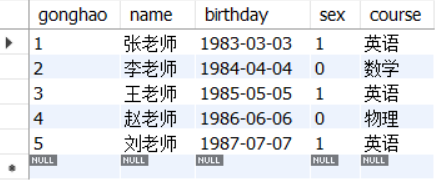

前面介绍了如何通过JDBC获取数据库连接，可是Connection对象不能直接执行SQL语句，需要引入Statement报告对象才能操作SQL。Statement对象由Connection的createStatement方法获得，它主要提供了下列两个方法：
executeUpdate：执行数据库的管理语句，主要包含建表、改表结构、删表、增加记录、修改记录、删除记录等等。它的返回值是整型，存放着当前语句的操作记录数量，例如删除了多少条记录、更新了多少条记录等。
executeQuery：执行数据库的查询语句，专用于select命令。它的返回值是ResultSet类型，查询的结果集可经由ResultSet对象得到。
对于管理类型的SQL指令来说，完整的操作过程分成以下三个步骤：
1、获取数据库连接：该步骤调用DriverManager类的getConnection方法获得连接对象。
2、创建该连接的执行报告：该步骤调用Connection对象的createStatement方法获得执行报告。
3、命令报告执行SQL语句：该步骤调用报告对象的executeUpdate方法来执行SQL语句。
把以上的三步骤串联起来，便得到了下面的数据库操作模板：
// 先获取数据库连接，再创建该连接的执行报告
try (Connection conn = DriverManager.getConnection(dbUrl, dbUserName, dbPassword);
Statement stmt = conn.createStatement()) {
String sql = "这里是待执行SQL语句";
stmt.executeUpdate(sql); // 执行处理语句
// createTable(stmt); // 创建表格
// insertRecord(stmt); // 插入记录
// updateRecord(stmt); // 更新记录
} catch (SQLException e) {
e.printStackTrace();
}
接下来看几个具体的SQL执行例子，首先创建一张名叫teacher的新表，则编写如下所示的建表代码：
// 创建表格
private static void createTable(Statement stmt) throws SQLException {
String sql = "create table teacher (" // 建表语句
+ " gonghao INT NOT NULL,"
+ " name VARCHAR(32) NOT NULL,"
+ " birthday DATE NULL,"
+ " sex INT NOT NULL,"
+ " course VARCHAR(32) NOT NULL,"
+ " PRIMARY KEY (gonghao))"
+ "comment = '教师信息表';";
int count = stmt.executeUpdate(sql); // 执行处理语句
System.out.println("建表语句的返回结果为"+count);
}
在之前的try代码内部调用createTable方法，运行测试程序后观察到以下的输出日志。
建表语句的返回结果为0
由于建表语句本身没有影响任何记录，因此executeUpdate方法在建表之时返回了0。接着打开MySQL的工作台，就能在工作台左侧看到如图所示的teacher表了。

建好了表，还要往里面添加几条记录，于是编写下面的插表代码：
// 插入记录
private static void insertRecord(Statement stmt) throws SQLException {
List<String> sqlList = Arrays.asList( // 以下每个语句插入一条记录
"insert into teacher (gonghao, name, birthday, sex, course) VALUES ('1', '张老师', '1983-03-03', 1, '语文')",
"insert into teacher (gonghao, name, birthday, sex, course) VALUES ('2', '李老师', '1984-04-04', 0, '数学')",
"insert into teacher (gonghao, name, birthday, sex, course) VALUES ('3', '王老师', '1985-05-05', 1, '英语')",
"insert into teacher (gonghao, name, birthday, sex, course) VALUES ('4', '赵老师', '1986-06-06', 0, '物理')",
"insert into teacher (gonghao, name, birthday, sex, course) VALUES ('5', '刘老师', '1987-07-07', 1, '化学')");
for (String sql : sqlList) {
int count = stmt.executeUpdate(sql); // 执行处理语句
System.out.println("添加记录语句的返回结果为"+count);
}
}
同样在try代码中调用insertRecord方法，运行测试程序观察到下列的日志文本。
添加记录语句的返回结果为1
添加记录语句的返回结果为1
添加记录语句的返回结果为1
添加记录语句的返回结果为1
添加记录语句的返回结果为1
因为每个insert语句插入一条记录，所以executeUpdate在插表时返回的数量是1。回到工作台查询teacher表的所有记录，便能看到如图所示的五条记录。

然后准备修改记录字段，让所有女老师去教英语，则包含update语句的方法代码如下所示：
// 更新记录
private static void updateRecord(Statement stmt) throws SQLException {
String sql = "update teacher set course='英语' where sex='1'"; // 记录更新语句
int count = stmt.executeUpdate(sql); // 执行处理语句。返回被更新的记录数量
System.out.println("更新记录语句的返回结果为"+count);
}
在try代码中调用updateRecord方法，运行测试程序后观察到以下的日志信息。
更新记录语句的返回结果为3
由日志可见，这个update语句更新了三条数据库记录，因而executeUpdate方法此时的返回值为3。回到MySQL工作台，重新查询teacher表，此时的记录结果如图所示，果然三个女老师的任教课程都变为英语了。

更多Java技术文章参见《Java开发笔记（序）章节目录》